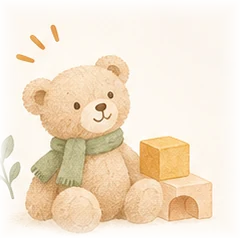

세 겹의 아치
아이와 세상, 놀이와 배움, 한국어와 영어를 잇는 다리를 떠올렸습니다.
한 회차에 아이는 최대 4명까지 참여합니다. 아이 한 명당 보호자 한 명이 수업 내내 함께하며, 아이만 맡기는 분리 수업은 운영하지 않습니다.
상담 신청은 예약 확정이 아닙니다. 날짜와 남은 자리는 담당자가 확인해 안내드립니다. 상담 신청하기
세 겹의 아치와 작은 단풍잎에 놀이와 배움, 서로 다른 문화를 이어 주고 싶은 마음을 담았습니다.
“놀이와 감각을 통해
아이들이 세상을 즐겁게 탐색하도록.”

영어는 시험 과목이 아닌 일상의 언어입니다.
아이들은 놀이 속에서 새로운 말소리에 조금씩 익숙해질 수 있습니다.
아이의 호기심과 스스로 선택하는 놀이를 존중합니다.

새로운 언어는 사람과 세상을 만나는 또 하나의 길입니다.
브릿지 원더에는 캐나다와 미국에서 지낸 10년의 경험이 담겨 있습니다. 그곳에서 영어는 공부 시간에만 쓰는 말이 아니라, 서로 인사하고 이야기하는 일상의 언어였습니다.
아이들도 영어를 정답을 맞히는 공부가 아니라, 노래와 이야기 그리고 놀이 속에서 편안하게 만나기를 바랐습니다.
아이마다 새로운 언어를 받아들이는 속도는 다릅니다. 브릿지 원더는 그 속도를 존중합니다.
아이와 세상, 놀이와 배움, 한국어와 영어를 잇는 다리를 떠올렸습니다.

북미에서 시작된 경험과 따뜻한 배움, 변화와 성장을 상징합니다.
브릿지 아카데미와 이어지는 색을 바탕으로, 아이들이 편안하게 느낄 수 있는 부드러운 색조를 골랐습니다.
네 가지 색에 브릿지 원더의 따뜻한 분위기와 아이들을 향한 마음을 담았습니다.
브릿지 원더는 아이가 낯선 것을 마주할 때도
편안하게 놀이할 수 있는 시간을 준비합니다.
그림책, 노래, 새로운 재료와 함께하는 브릿지 원더의 순간을 인스타그램에서 만나 보세요.

수업을 준비하는 모습과 새로운 놀이 소식은 공식 인스타그램에서 확인해 주세요.